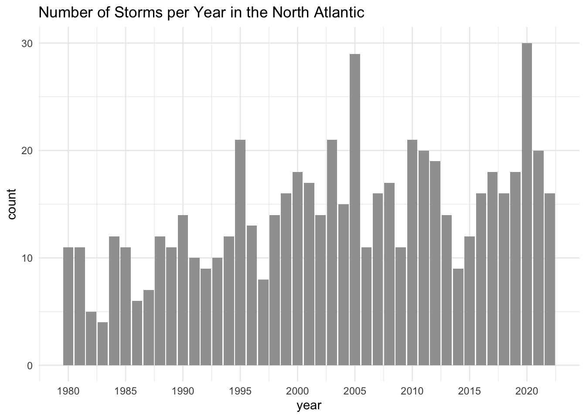
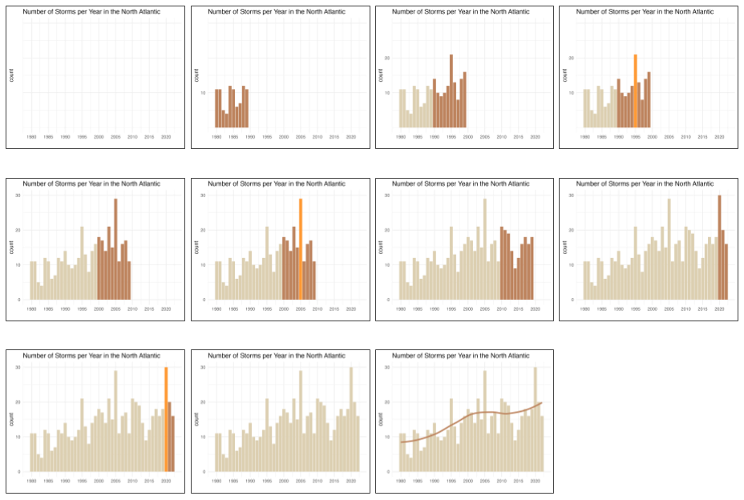

13) Plots-based Story
This module is associated with the example Storms in the North Atlantic.
This Closeread story is similar to the illustration-based stories of the Illlustrated Guide to a Ph.D. and the story of A Bicycle Like No Other, in the sense that there are multiple images. So what makes Storms in the North Atlantic special? It is different from the other stories because the images in this case are all data visualizations from analyzing storms data.
The Graphic of Interest
The motivation for the story in this module is a bar chart depicting the number of storms per year in the North Atlantic, like in the following figure.
Admittedly, this graphic seems to be just another ordinary bar chart. The horizontal axis is associated with the year. The vertical axis represents the counts for the number of storms. And the height of each bar indicates the number of storms that occurred in a given year.
Some years have a small number of storms, most years have a medium number of storms, and a couple of years have a very large number of storms.
At first glance, there is not a lot of storytelling juice to be squeezed from such a dull bar chart.
Or is there?
Storms Data
Since the bar chart of interest comes from analyzing data, let me tell you a bit about the data set behind this example.
The data set is the tibble storms that comes in the tidyverse package "dplyr". This data is a curated table from the so-called Hurricane Databases (HURDAT), which is a collection of databases managed by the National Hurricane Center (NHC).
In particular, the data storms includes the positions and attributes of tropical systems in the North Atlantic. If you are using a version of "dplyr" greater than or equal to 1.1.4, the storms are from the period 1975 to 2022, measured every six hours during the lifetime of a storm.
Assuming that you’ve loaded "tidyverse" (or "dplyr") in R, when you inspect the structure of storms, you’ll get an output like the following one:
str(storms, vec.len = 2)tibble [19,537 × 13] (S3: tbl_df/tbl/data.frame)
$ name : chr [1:19537] "Amy" "Amy" ...
$ year : num [1:19537] 1975 1975 ...
$ month : num [1:19537] 6 6 6 6 6 ...
$ day : int [1:19537] 27 27 27 27 28 ...
$ hour : num [1:19537] 0 6 12 18 0 ...
$ lat : num [1:19537] 27.5 28.5 29.5 30.5 31.5 ...
$ long : num [1:19537] -79 -79 -79 -79 -78.8 ...
$ status : Factor w/ 9 levels "disturbance",..: 7 7 7 7 7 ...
$ category : num [1:19537] NA NA NA NA NA ...
$ wind : int [1:19537] 25 25 25 25 25 ...
$ pressure : int [1:19537] 1013 1013 1013 1013 1012 ...
$ tropicalstorm_force_diameter: int [1:19537] NA NA NA NA NA ...
$ hurricane_force_diameter : int [1:19537] NA NA NA NA NA ...For the scope of our bar chart, we only focus on the columns name and year:
name: Storm nameyear: Year when storm occurred
I encourage you to spend some time inspecting the content of storms. Each row corresponds to the location and attributes of a particular tropical system (i.e. storm). This means that a single storm is described by multiple consecutive rows.
Number of Storms Per Year
To create the bar chart, the first step involves getting the counts of the number of storms per year from 1980 to 2022.
Conceptually, this counting process shouldn’t be that complicated, except for the fact that the names of storms can be repeated across different years. It turns out that you can have a certain name, say "Gaston", that appears in multiple years (e.g. 2004, 2010, 2016, 2022).
This is why we need some sort of unique identifier for each storm. My solution is to create—i.e. mutate()—this ID column by paste()ing the name and year for every row, and then proceed by counting the id’s per year, and then counting again the year values:
# number of storms per year (1980-2022)
storms_per_year = storms |>
filter(year >= 1980) |>
mutate(id = paste0(name, "-", year)) |>
count(year, id, name = "count") |>
count(year, name = "count")This gives you the following table of frequencies which is exactly what we need to make the bar chart we are interested in:
storms_per_year |> slice_head(n = 10)# A tibble: 10 × 2
year count
<dbl> <int>
1 1980 11
2 1981 11
3 1982 5
4 1983 4
5 1984 12
6 1985 11
7 1986 6
8 1987 7
9 1988 12
10 1989 11Bar-chart
Having obtained the counts for the number of storms per year, we can pipe this derived table to ggplot(), adding a geom_col() layer, tuning a few graphical elements here and there, and be able to get a bar-chart:
storms_per_year |>
ggplot(aes(x = year, y = count)) +
geom_col(fill = "#a0a0a0") +
scale_x_continuous(breaks = seq(1980, 2020, by = 5)) +
theme_minimal() +
labs(title = "Number of Storms per Year in the North Atlantic")Deciding the Visual Story
As you might expect, I wouldn’t be using this example if it didn’t have an interesting narrative. But of course it has: the punchline is the increasing overall trend in the number of storms per year in the North Atlantic during the comprised time period between 1980 and 2022.
Let me walk you through the main decisions I made in order to take the above bar chart and break it apart into a series of graphics that provide a richer narrative flow.
I decided to do an analysis decade-by-decade: 1980’s, 1990’s, 2000’s, 2010’s, and finishing in 2022. The following figure shows the 11 graphics that I ended up with.

The starting graphic is an empty graphic (i.e. no bars), just the reference grid lines, the title, and a few visual cues for the x-axis and the y-axis.
The second frame is a partial bar-chart displaying only the bars for the first decade, i.e. 1980’s. I know it’s hard to tell from this graphic but there is also a first value in the y-axis scale.
The third frame involves the bars of the 1980’s decade colored in a desaturated (neutral) hue, plus the bars of the next decade 1990’s colored in a darker and more intense hue.
Before transitioning to the next decade (2000’s), frame number 4 highlights the tallest bar of the 1990’s which occurs in year 1995.
The fifth frame involves the bars between 1980-1999 (in a low saturation hue), and the new set of bars for the 2000’s decade (in a darker hue).
Like frame number 4, frame 6 highlights the bar of year 2005 which is the tallest bar of the 2000’s decade.
As you can tell, throughout the story I’m revealing certain pieces of information, in a gradual frame-by-frame way. In any given frame I reveal just a few numbers in the x-axis, a few values in the y-axis, show some of the bars, and when appropriate highlight a remarkable fact about the data under description.
The use of color is important: the different color hues match the progression of the story. I use a low saturation color for the bars in past decades, and a more saturated color for the bars of the current decade. To highlight a specific bar (e.g. reaching a new maximum) I choose a brighter and more vivid color.
In summary, the storytelling design it’s all about hiding & revealing. Starting with a graphic in which most visual elements are hidden, and then gradually progressing to new graphics by exposing certain pieces of information, one at a time.
Start With the End in Mind
A question that I often get asked by my students is “How did you do it?”, meaning they want to know how I came up with the entire design. My answer to them is always the same one: You have to spend some time to come up with such design process. It does not occur automatically. I actually step away from the computer and draw some sketches on paper, this is what I call the analog stage of the work. Once I have a good idea of the story and the visuals, I go back to my computer to begin the digital stage.
You know the old saying “start with the end in mind.” This is precisely what I recommend doing in this type of story. In other words, start with the graphic that you want to finish your story with, and then apply a deconstructing strategy.
In other words, take the plot or plots that encapsulate the narrative arch or the ultimate message of your story, and then walk backwards to deconstruct it into its different stages according to your desired narrative. At each step you strip some graphical elements from the previous graphic, until you end up with a minimal, mostly empty, graphic. Then put everything together in reverse order, so you end up constructing a nice visual story.
Hiding Graphical Elements
The deconstruction process that I follow involves hiding or making invisible some of the displayed data, which usually involves “hiding” a combination of some of the bars, some of the axis tick marks, sometimes also some of the labels, etc.
Here’s an example of what I mean. In the following snippet of code I show the commands to get two versions of the same bar-chart. The difference is that the first set of commands gives you the bar chart in which all its elements are visible. In contrast, the second set of commands give you a bar chart in which most of its graphical elements are hidden by making them transparent or preventing them from being printed.
# graphic with visible elements
storms_per_year |>
ggplot(aes(x = year, y = count)) +
geom_col(fill = "#a0a0a0") +
scale_x_continuous(breaks = seq(1980, 2020, by = 5)) +
theme_minimal() +
labs(title = "Number of Storms per Year in the North Atlantic")
# graphic with most elements invisible (hidden)
storms_per_year |>
ggplot(aes(x = year, y = count)) +
geom_col(fill = "#a0a0a000") +
scale_x_continuous(breaks = seq(1980, 2020, by = 5)) +
scale_y_continuous(breaks = c(10, 20, 30)) +
theme_minimal() +
theme(axis.text.y = element_text(color = "#00000000")) +
labs(title = "Number of Storms per Year in the North Atlantic",
x = "")
You may be asking “Why is it important to use the same input data and to keep pretty much the same graphical settings in order to create each graphic?”
For a very simple reason: visual consistency among all graphics. Think about it. In the rendered Closeread HTML document, you want to transition from one graphic to the next one in a way that is as much seamless as possible. By keeping constant all the supporting graphical elements such as the axes, the scales, the grid lines, the ratios, etc, passing from one graph to the next one gives you the visual impression of an animation, even though the graphics are 100% static plots.
If you are not careful enough, a minor change in the scale and/or text in any of the axes, or the text in the title, or the input data, it could result in a plot that is slightly different from the others and eventually disrupt the smooth transitions.
Take a look
You can take a look at the story of the Storms in the North Atlantic available in two versions: